<!DOCTYPE html>
<html>
</html>
<head>
  <meta charset="utf-8">
  <meta http-equiv="X-UA-Compatible" content="IE=edge">
  <title>ACME Dashboard & Data Vis | Project 3</title>
  <meta name="description" content="">
  <meta name="viewport" content="width=device-width, initial-scale=1">
  <meta name="robots" content="all,follow">
  <!-- Bootstrap CSS-->
  <link rel="stylesheet" href="vendor/bootstrap/css/bootstrap.min.css">
  <!-- Font Awesome CSS-->
  <link rel="stylesheet" href="vendor/font-awesome/css/font-awesome.min.css">
  <!-- Google fonts - Roboto-->
  <link rel="stylesheet" href="https://fonts.googleapis.com/css?family=Roboto:400,300,700,400italic">
  <!-- owl carousel-->
  <link rel="stylesheet" href="vendor/owl.carousel/assets/owl.carousel.css">
  <link rel="stylesheet" href="vendor/owl.carousel/assets/owl.theme.default.css">
  <!-- theme stylesheet-->
  <link rel="stylesheet" href="css/style.turquoise.css" id="theme-stylesheet">
  <!-- Custom stylesheet - for your changes-->
  <link rel="stylesheet" href="css/custom.css">
  <!-- Favicon-->
  <!-- <link rel="shortcut icon" href="img/favicon.png"> -->
  <link rel="apple-touch-icon" sizes="180x180" href="favicon/apple-touch-icon.png">
  <link rel="icon" type="image/png" sizes="32x32" href="favicon/favicon-32x32.png">
  <link rel="icon" type="image/png" sizes="16x16" href="favicon/favicon-16x16.png">
  <link rel="manifest" href="favicon/site.webmanifest">
  <!-- Tweaks for older IEs--><!--[if lt IE 9]>
    <script src="https://oss.maxcdn.com/html5shiv/3.7.3/html5shiv.min.js"></script>
    <script src="https://oss.maxcdn.com/respond/1.4.2/respond.min.js"></script><![endif]-->
</head>
<body>
  <!--to keep Firefox from showing body text before head is loaded- FOUT-->
  <script>0</script>
  <div id="all">
    <div class="container-fluid">
      <div class="row row-offcanvas row-offcanvas-left"> 
        <!--   *** SIDEBAR ***-->
        <div id="sidebar" class="col-md-4 col-lg-3 sidebar-offcanvas">
          <div class="sidebar-content">
            <h1 class="sidebar-heading"> <a href="index.html">Alexandra Huang</a></h1>
            <p class="sidebar-p">I'm a product designer/UX researcher with a master's in Human Factors and Ergonomics, currently working as a data analyst.</p>
            <!--<p class="sidebar-p">Currently based in the San Francisco Bay Area.</p>-->
            <ul class="sidebar-menu">
                <!-- Link-->
                <li class="sidebar-item"><a href="index.html" class="sidebar-link">Portfolio</a></li>
                <!-- Link-->
                <li class="sidebar-item"><a href="about.html" class="sidebar-link">About</a></li>
                <!-- Link-->
                <li class="sidebar-item"><a href="contact.html" class="sidebar-link active">Get in touch</a></li>
            </ul>
            <p class="social"><a href="mailto:alexandra[dot]huang[at]gmail[dot]com" data-animate-hover="pulse" class="email"><i class="fa fa-envelope"></i></a><a href="https://www.linkedin.com/in/alexandrayhuang" data-animate-hover="pulse" class="external linkedin"><i class="fa fa-linkedin"></i></a><a href="https://github.com/alexandra-huang" data-animate-hover="pulse" class="external github"><i class="fa fa-github"></i></a></p>
            <div class="copyright text-center text-md-left">
              <p class="credit">Copyright &copy; 2024 Alexandra Huang | Template by <a href="http://bootstrapious.com/portfolio-themes" class="external">Bootstrapious.com</a></p>
              <!-- Please do not remove the backlink to us, unless you support the development at http://bootstrapious.com/donate. It is part of the license conditions. Thanks for understanding :)        -->
            </div>
          </div>
        </div>
        <!--   *** SIDEBAR END ***  -->
        <!--   *** DETAIL ***-->
        <div class="col-md-8 col-lg-9 content-column white-background">
          <div class="small-navbar d-flex d-md-none">
            <button type="button" data-toggle="offcanvas" class="btn btn-outline-primary"> <i class="fa fa-align-left mr-2"></i>Menu</button>
            <h1 class="small-navbar-heading"> <a href="index.html">Alexandra Huang</a></h1>
          </div>
          <div class="row">
            <div class="col-xl-10">
              <div class="content-column-content">
                <h1>ACME Dashboard and Data Visualization</h1>
                <p class="lead"><strong>Designed and prototyped</strong> a dashboard for a data analytics company that allows a fraud manager to both get a quick overview of their team's progress and dive deeper into individual performers' stats.</strong></p>
                
                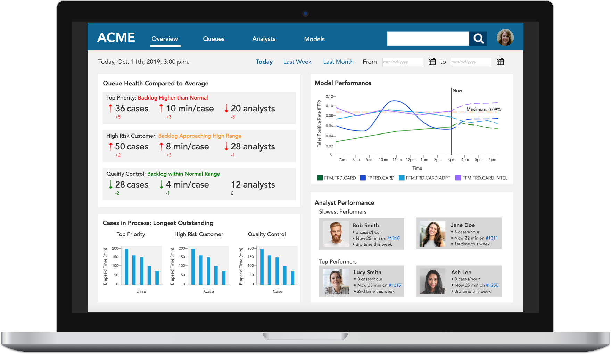
                <br><br><br>
                <p class="proj-body link"><a href="acme-prototype/home__overview_.html">Link to full clickable Axure prototype (desktop)</a></p>

                <blockquote class="blockquote">
                  <p class="mb-0"><strong>Keywords:</strong> UX design, interaction design, dashboards, data visualization, iteration, prototyping, Axure</p>
                  <br>
                  <p class="mb-0"><strong>Team</strong>: 1 designer (<strong>me</strong>)</p>
                  <br>
                  <p class="mb-0"><strong>When:</strong> Sept. - Oct. 2019</p>
                </blockquote>
                <hr>
                <h3>Background</h3>
                <p>This project was done for a large data analytics company that asked to not be named (hence ACME is a placeholder). The client partnered with our Interaction Design II course at San Jose State University for this project. We were tasked with designing a fraud management dashboard solution meant to be used by a fraud manager of a team of analysts who respond to credit card fraud, notifying customers and resolving these issues, so that the manager can review the team's fraud strategy and make adjustments as needed.<p>
                <hr>
                <!--User and Business Problems-->
                <h3>Problems and Opportunities</h3>
                <p class="proj-body"><strong>User Needs:</strong> </p>
                <ul class="proj-body-list">
                  <li>To get a quick overview of what's going on, reviewing case info, queue status, etc.</li> 
                  <li>To make quick decisions and act on events and data</li>
                  <li>To be able to export reports and graphs and dive deeper into data visualizations</li> 
                </ul>
                <p class="proj-body"><strong>Business Goals:</strong></p>
                <ul class="proj-body-list">
                  <li>To present a clean, easy to use solution to fraud managers so that they can do their jobs and monitor their team's progress.</li> 
                </ul>
                <p></p>
                
                <hr>
                <h3>Design Process</h3>
                <p class="proj-body">Given the nature of the Interaction Design II course and its focus on interaction design, I did not conduct user research and instead worked under the assumption that the information we were given for the project would be normally collected through the necessary research step, so as to inform the design process. The following persona was provided to us by the client to help us understand the user needs and problems.</p>

                <p></p>
                <!--Persona-->
                <h4>Persona</h4>
                
                <br><br>
                <blockquote class="blockquote">
                  <p class="mb-0">Jeanine is a fraud manager and team leader. On a typical workday, she "wants to be able to <strong>run different scenarios</strong> that allow her to <strong>quickly respond to changing customer/applicant behavior</strong>, as well as respond to changes in results <strong>as new data becomes available</strong>."</p>
                  <br>
                  <p class="proj-body"><strong>A Perfect Day</strong></p>
                  <p class="mb-0">"Instead of having to react to operational challenges in a knee- jerk fashion, she is able to <strong>proactively run scenarios that consider likely challenges</strong>, so that she has a <strong>library of scenarios and solutions</strong> ready to quickly deal with operational challenges."</p>
                  <br>
                  <p class="proj-body"><strong>Pain Points:</strong></p>
                  <ul class="proj-body-list">
                    <li>"<strong>Difficult to get reports</strong> to see the 'big picture'"</li> 
                    <li>"<strong>Hard to find the data</strong> she needs"</li> 
                    <li>"Slowed down waiting for time from IT to add data sources"</li>
                    <li>"Reports don’t provide <strong>visuals to communicate</strong> clearly to upper management"</li>
                    <li>"System performance, number of different/disparate systems needed to make a decision"</li>
                    <li>"<strong>Productivity loss</strong> due to inadequate tools and training"</li>
                  </ul>
                </blockquote>
                
                <p class="proj-body">Understanding the target user through Jeanine helps in <strong>identifying what the goals of the design are</strong>, the <strong>pain points</strong> that need to be addressed, and which goals should be <strong>prioritized</strong> in the design.</p>
                <p></p>
  
                <!--Conceptual Model-->
                <h4>Conceptual Model</h4>
                <p class="proj-body">I developed a conceptual model to factor in what elements would be part of the <strong>user's mental model</strong> in using this dashboard. The conceptual model helped to ensure I would not leave out any critical aspects of Jeanine's use of the dashboard by identifying all of the objects and actions involved, attributes of the objects. I was better able to come up with possible design ideas knowing all of the moving parts I was working with, so to speak, while also being able to check my later designs for <strong>consistency</strong> against this conceptual model.</p>
                <h5>Object-Action Matrix</h5>
                <p class="proj-body">I created an object-action matrix to help with thinking about the problems to be solved, picking out four main objects: queue, analyst, model, and case, and identified the primary actions Jeanine needs to be able to perform on these objects.</p>
                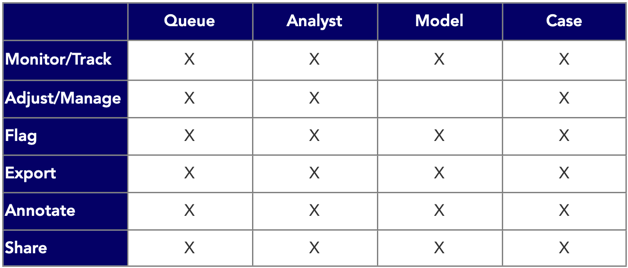

                <h5>Object-Attribute Tables</h5>
                <p class="proj-body">I then expanded each of the four objects into their corresponding attributes to build the conceptual grammar for the design. The attributes are categorized into regular ones that do not have dimensions, such as name and ID number, and <strong>dimensions</strong> for aspects that can be tracked through their <strong>measures</strong>. For example, <strong>productivity</strong> of an analyst can be measured through the <strong>number of cases that analyst completes per hour</strong>.</p>

                <a href="#imgA">
                  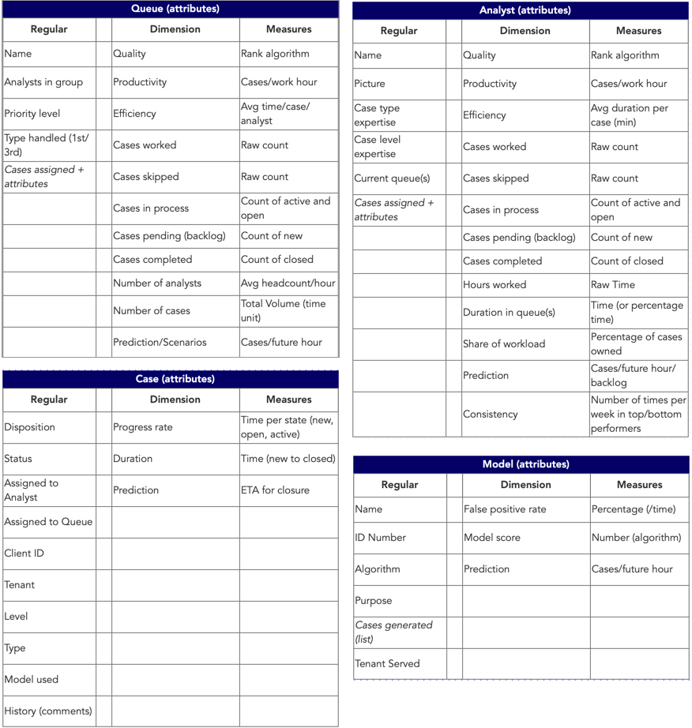
                </a>
                <p class="proj-body caption"><em>Object-attribute tables were created for each of the main objects: <strong>queue, analyst, model, and case</strong>.</em></p>
                
                <!-- lightbox container hidden with CSS -->
                <a href="#_" class="lightbox" id="imgA">
                  
                </a>

                <!--Prioritization Matrix-->
                <h5>Prioritization Matrix</h5>
                <p class="proj-body">Again, using the persona of Jeanine, I sorted the object-action pairs into frequently and rarely used actions. Frequent actions are thus of higher priority than rare actions, which should be reflected in the design; frequent actions should generally <strong>take fewer clicks to reach</strong>, or be within easy reach for the user. As fraud manager, Jeanine wants to be able to get a <strong>quick overview</strong> of how her team is doing, which includes monitoring and managing analysts on her team as well as the queues, cases, and models, drilling down to details, and making notes on all aspects of her team. </p>
                
                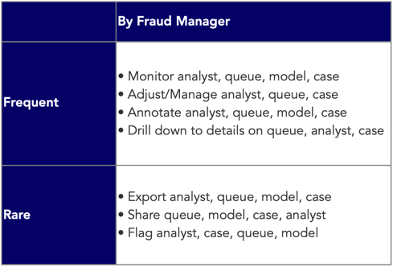
                <p class="proj-body caption"><em>This priority matrix shows that object-action pairs such as monitoring queues and analysts are more frequently used than things like exporting reports on cases.</em></p>
                <br>

                <!--Sketches-->
                <h4>Sketches</h4>
                <p class="proj-body">I started designing possible dashboard solutions by making some rough sketches on paper, figuring out the layout of the design that would best help Jeanine quickly perform frequent actions and help her with managing her team's fraud strategy.</p>

                <br>
                <!--my sketches - clickable image-->
                <a href="#imgSketch2">
                  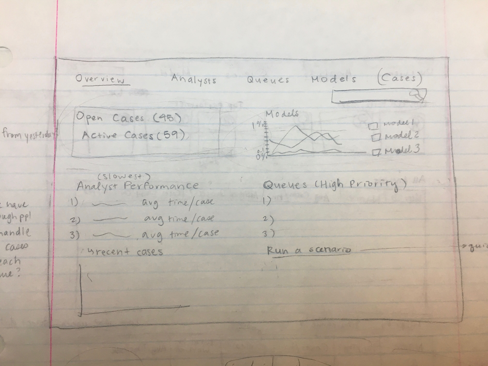
                </a>
                <!-- lightbox container hidden with CSS -->
                <a href="#_" class="lightbox" id="imgSketch2">
                  
                </a>
                <p class="proj-body caption"><em>Sketch of the Overview page with a quadrant for each of the four objects (analyst, queue, model, case).</em></p>

                <a href="#imgSketch1">
                  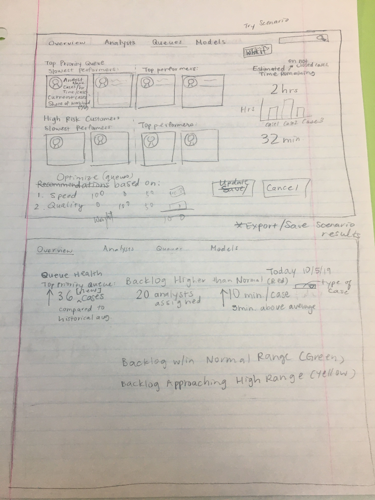
                </a>
                <!-- lightbox container hidden with CSS -->
                <a href="#_" class="lightbox" id="imgSketch1">
                  
                </a>

                <p class="proj-body caption"><em>Sketch of the Queue page and notes on the Overview page.</em></p>
                <!--END SKETCHES-->
                
                <!--Grid Design-->
                <h4>Grid Design</h4>
                <p class="proj-body">To ensure that a proper grid is followed in the page layout, I put together the following grid designs based on my sketches, before making the final design. Good grid design means making sure that <strong>each region in the grid has a purpose</strong>, following proper information hierarchy and placing <strong>global actions at the top</strong>, with <strong>local actions close to the objects they affect</strong>, as well as being <strong>consistent</strong> with the grid and conceptual grammar across all multiple screens.</p>
                <a href="#imgGrid">
                  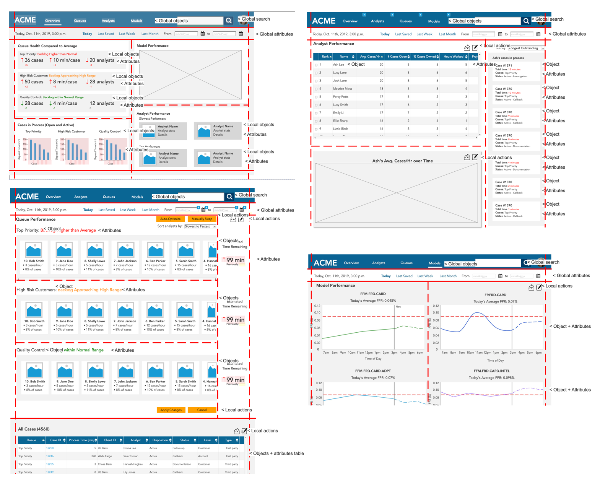
                </a>
                <!-- lightbox container hidden with CSS -->
                <a href="#_" class="lightbox" id="imgGrid">
                  
                </a>

                <p class="proj-body caption"><em>Sketch of the Queue page and notes on the Overview page.</em></p>
                
                <br>
                <!--Designing and Prototyping-->
                <h4>Designing and Prototyping</h4>
                <p class="proj-body">The conceptual model and grammar were useful in keeping the design of the final prototype consistent, ensuring the flow through the dashboard solution screens would be intuitive for Jeanine to use, with attention paid to placement of objects and buttons that allow for corresponding actions to be performed on those objects. I iterated on the initial design based on feedback received in a design critique from the professor as well as the client, which resulted in the design below.</p>

                <div id="main-slider" class="owl-carousel owl-theme">
                  <div class="item">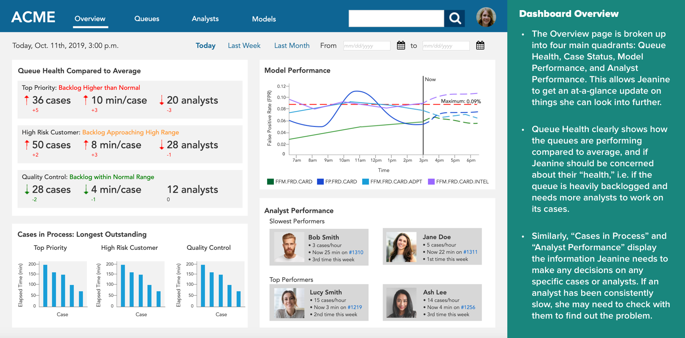</div>
                  <div class="item">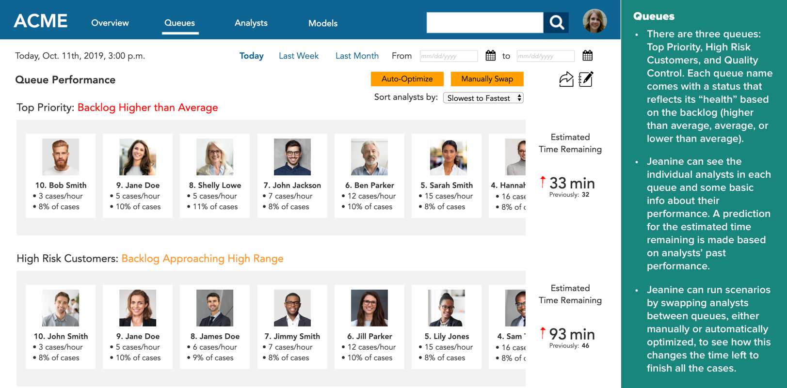</div>
                  <div class="item">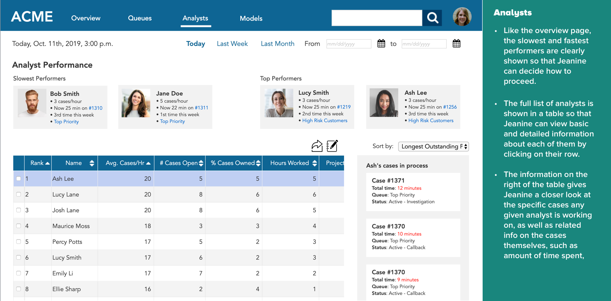</div>
                  <div class="item">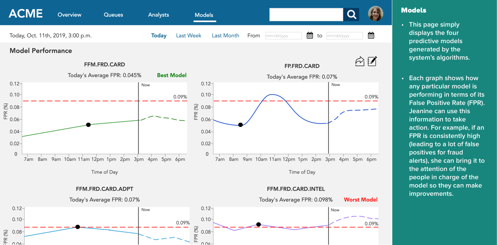</div>
                </div>
                <!-- /#main-slider-->
                <p class="proj-body link"><a href="acme-prototype/home__overview_.html">Link to full clickable Axure prototype (desktop)</a></p>

                <hr>
                <h3>Takeaways</h3>
                <ul class="proj-body-list">
                  <li>Dashboards can be incredibly complex, but do not have to be. It's probably better to <strong>keep things simple</strong> so that the user knows where to find things and how to utilize the dashboard.</li> 
                  <li>Designing a dashboard <em>is</em> a complex task. It's crucial to <strong>fully understand the problem you're trying to solve</strong> and <strong>the user's needs</strong> before diving into the design.</li>
                  <li>There are <strong>many possible ways to interact with data</strong> visualizations, and each of these interactions fulfills a different objective for the user, since it presents the data in a different way.</li> 
                </ul>

                <!-- Previous and Next buttons -->
                <nav aria-label="Portfolio navigation">
                  <ul class="pagination justify-content-center">
                    <li class="page-item"><a class="page-link" href="project2-chegg.html">Previous</a></li>
                    <li class="page-item"><a class="page-link" href="project4-matchdog.html">Next</a></li>
                  </ul>
                </nav>
                <!-- Previous and Next buttons end-->
              </div>
            </div>
          </div>
        </div>
      </div>
    </div>
  </div>
  <!-- JavaScript files-->
  <script src="vendor/jquery/jquery.min.js"></script>
  <script src="vendor/popper.js/umd/popper.min.js"> </script>
  <script src="vendor/bootstrap/js/bootstrap.min.js"></script>
  <script src="vendor/jquery.cookie/jquery.cookie.js"> </script>
  <script src="vendor/owl.carousel/owl.carousel.js"></script>
  <script src="vendor/masonry-layout/masonry.pkgd.min.js"></script>
  <script src="js/front.js"></script>
</body>